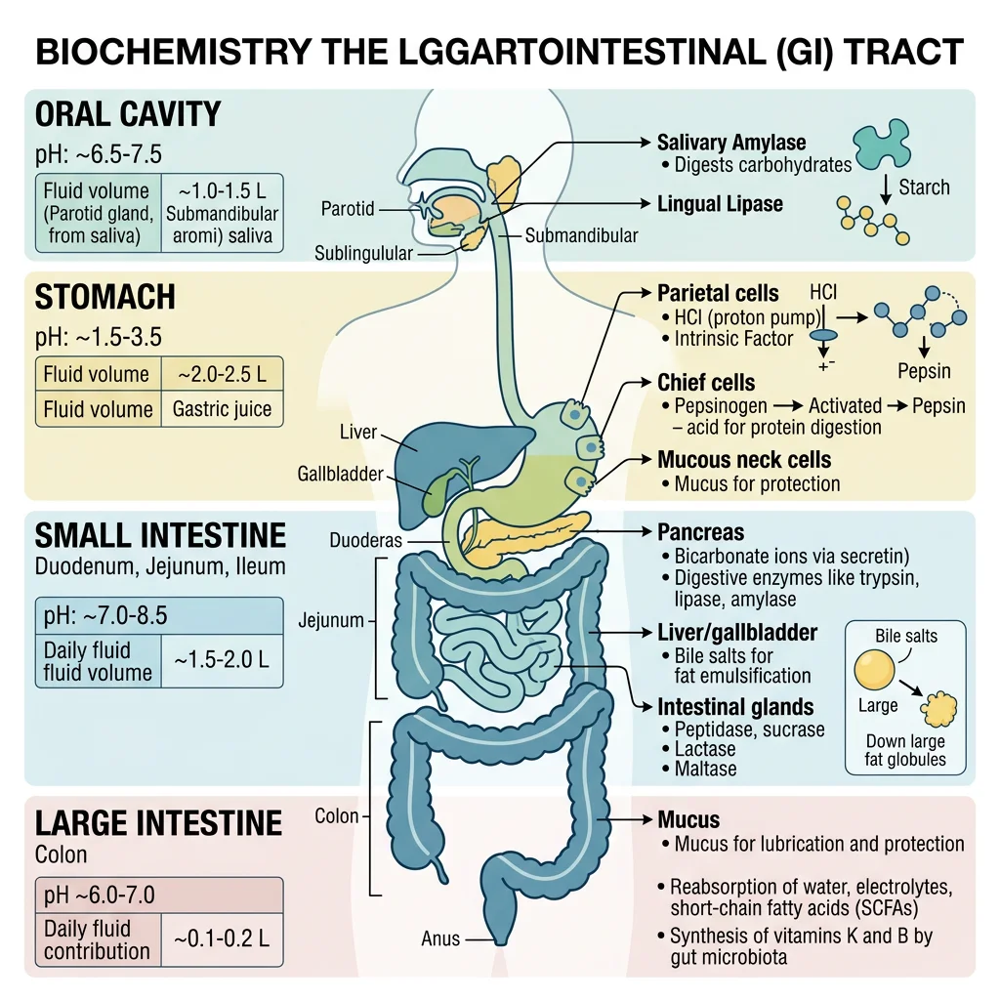
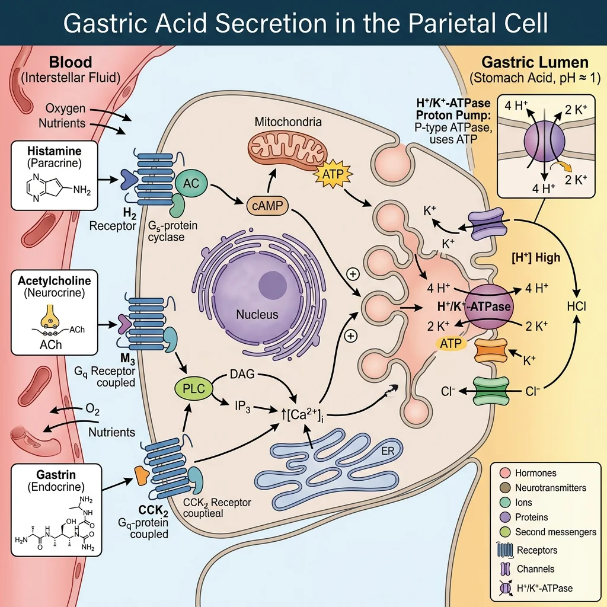
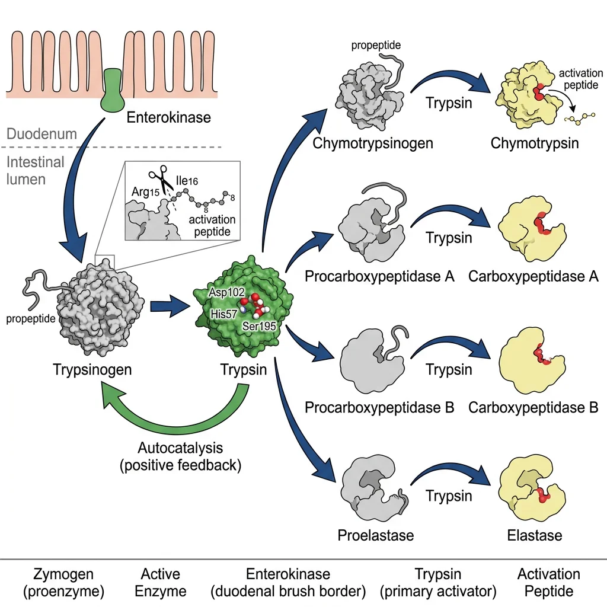
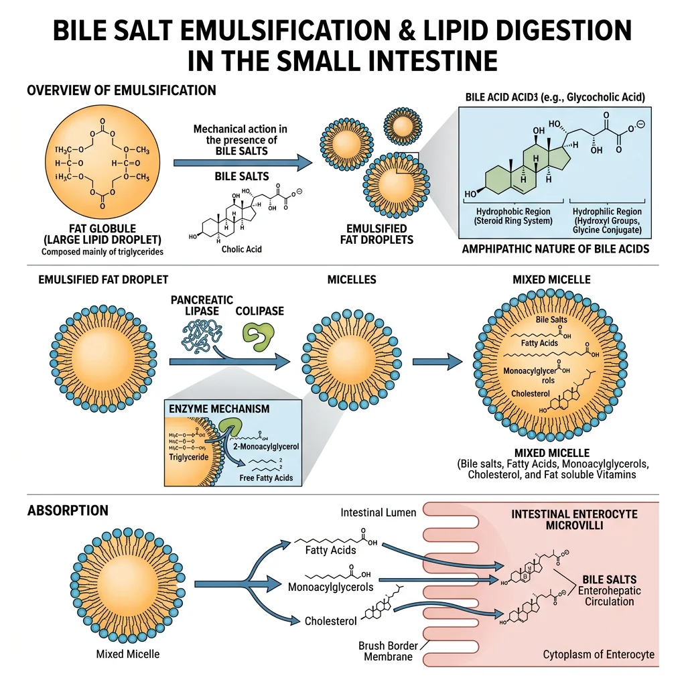
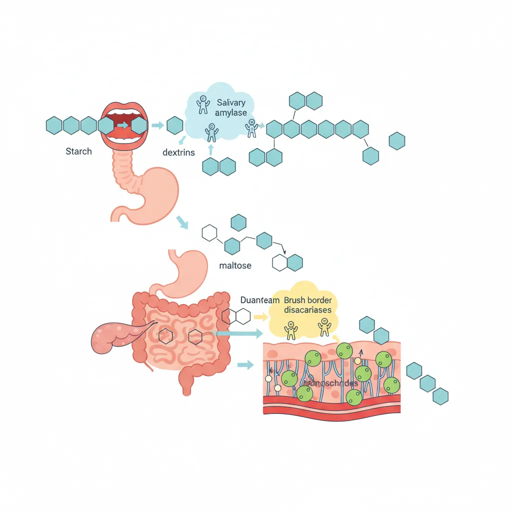
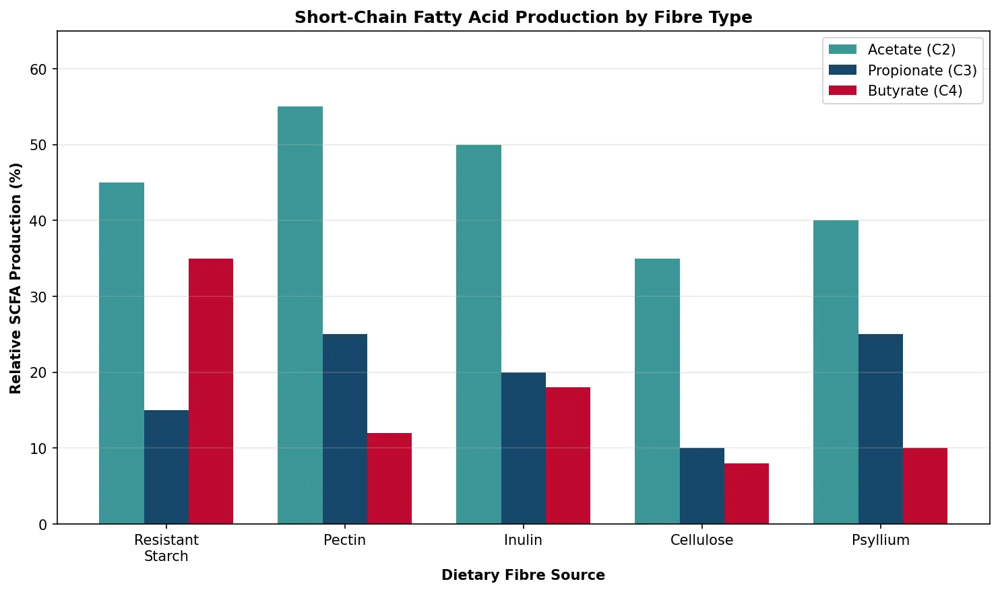

Biochemistry Mastery
Biological Chemistry Fundamentals
Atoms, bonds, functional groups, thermodynamicsWater, pH & Biological Buffers
Water polarity, pH, Henderson-Hasselbalch, blood buffersAmino Acids & Protein Structure
Amino acid classes, peptide bonds, protein foldingEnzymes & Catalysis
Kinetics, Michaelis-Menten, inhibition, regulationCarbohydrates & Lipids
Sugars, glycogen, fatty acids, cholesterol, membranesMetabolism & Bioenergetics
ATP, glycolysis, gluconeogenesis, redox carriersCitric Acid Cycle & Oxidative Phosphorylation
Acetyl-CoA, ETC, ATP synthase, oxygen dependenceSignal Transduction & Cell Communication
GPCRs, kinases, calcium, hormone cascadesNucleic Acids & Gene Expression
DNA, replication, transcription, translation, epigeneticsBrain & Nervous System Biochemistry
Neurotransmitters, ion gradients, myelin, neurodegenerationHeart & Muscle Biochemistry
Cardiac metabolism, actin-myosin, energy systemsLiver Biochemistry
Glucose homeostasis, detox, urea cycle, bileKidney Biochemistry & Acid-Base
pH regulation, ion transport, hormonal functionsEndocrine System Biochemistry
Hormone classes, signaling, glucose & stress controlDigestive System Biochemistry
Gastric acid, enzymes, bile, absorption, microbiomeImmune System Biochemistry
Antibodies, cytokines, complement, oxidative burstAdipose Tissue & Energy Balance
Triglycerides, lipolysis, leptin, obesityTissue-Specific Metabolism
Fed vs fasting, organ fuel selection, starvationMolecular Basis of Disease
Diabetes, cancer metabolism, neurodegenerationClinical Biochemistry & Diagnostics
Blood tests, liver/kidney markers, lipid panelsGI Tract Overview & Secretory Functions
The gastrointestinal (GI) tract is a remarkable 9-metre biochemical processing plant that converts complex food into absorbable nutrients. Think of it as an assembly line running in reverse — instead of building products, it systematically disassembles macromolecules into their monomeric building blocks: monosaccharides, amino acids, fatty acids, and nucleotides.

The GI Tract as a Chemical Factory
Each segment of the GI tract has a specialised biochemical environment. The mouth initiates starch digestion at pH 6.8, the stomach denatures proteins at pH 1.5–2.0, and the small intestine completes digestion at pH 7.5–8.0. This pH gradient is not accidental — it activates region-specific enzymes while inactivating those from upstream segments.
The GI tract secretes approximately 7–10 litres of fluid daily — more than total blood volume — yet only 100–200 mL is lost in faeces. This extraordinary reclamation efficiency depends on coordinated secretion and absorption across multiple organs.
| Organ | Daily Secretion (L) | Key Secretions | pH | Primary Biochemical Function |
|---|---|---|---|---|
| Salivary glands | 1.0–1.5 | Amylase, lingual lipase, mucin, IgA | 6.5–7.0 | Starch hydrolysis, lubrication |
| Stomach | 2.0–3.0 | HCl, pepsinogen, intrinsic factor, mucus | 1.5–2.0 | Protein denaturation, pepsin activation |
| Pancreas | 1.0–1.5 | Zymogens, lipase, amylase, HCO₃⁻ | 7.5–8.2 | Macronutrient hydrolysis |
| Liver/gallbladder | 0.5–1.0 | Bile acids, cholesterol, bilirubin | 7.0–7.7 | Lipid emulsification |
| Small intestine | 1.0–2.0 | Brush border enzymes, mucus, IgA | 6.5–7.5 | Final digestion, absorption |
| Large intestine | 0.2 | Mucus, K⁺, HCO₃⁻ | 5.5–7.0 | Water/electrolyte reclamation |
Neural & Hormonal Regulation
Digestion is controlled by three overlapping phases: (1) Cephalic phase — sight, smell, and thought of food trigger vagal stimulation (≈30% of gastric secretion); (2) Gastric phase — food distension and peptides trigger gastrin release (≈60%); (3) Intestinal phase — chyme entering the duodenum triggers secretin and CCK, which stimulate pancreatic and biliary secretion while inhibiting gastric emptying. The enteric nervous system (the "second brain") contains 100 million neurons and can coordinate digestion independently of the CNS.
William Beaumont & Alexis St. Martin (1822–1833)
When Canadian fur trapper Alexis St. Martin was accidentally shot, the wound healed with a permanent gastric fistula — a window into his stomach. Army surgeon William Beaumont conducted over 238 experiments, directly observing gastric digestion for the first time. He demonstrated that: gastric juice is acidic, digestion is a chemical (not putrefactive) process, emotional state affects secretion rate, and different foods digest at different rates. These observations launched the field of digestive biochemistry decades before enzyme chemistry was understood.
Gastric Acid Secretion
The stomach produces hydrochloric acid at concentrations of 150–160 mmol/L — a pH of about 0.8 inside the canaliculus. This represents a 3-million-fold concentration gradient of H⁺ ions across the parietal cell membrane, making it one of the most energetically expensive processes in the body. Each meal triggers the production of approximately 2 litres of gastric juice containing HCl, pepsinogen, intrinsic factor, and protective mucus.

Parietal Cell Physiology
Parietal (oxyntic) cells in the gastric body and fundus are among the most mitochondria-rich cells in the body — mitochondria occupy ≈40% of cell volume to supply the enormous ATP demand of acid secretion. When stimulated, the cell undergoes a dramatic morphological transformation: intracellular tubulovesicles containing H⁺/K⁺-ATPase pumps fuse with the apical canalicular membrane, massively increasing the secretory surface area.
Three Stimulatory Pathways
Parietal cells integrate signals from three independent pathways, each acting through a different receptor and second messenger:
- Histamine (ECL cells) → H₂ receptor → cAMP → PKA → pump activation (most potent)
- Acetylcholine (vagus nerve) → M₃ receptor → IP₃/Ca²⁺ → pump activation
- Gastrin (G cells) → CCK-B receptor → IP₃/Ca²⁺ → pump activation (also stimulates ECL histamine release)
These pathways potentiate each other — blocking just one (e.g., histamine with H₂ blockers) reduces total acid output by 60–70%, not merely 33%, because of lost synergistic amplification.
Mucosal Defence — The Gastric Barrier
The stomach protects itself via an unstirred mucus-bicarbonate layer creating a pH gradient from 1–2 (lumen) to 7 (epithelial surface). Surface epithelial cells secrete HCO₃⁻ and produce prostaglandins (PGE₂) that stimulate mucus secretion, inhibit acid output, and promote mucosal blood flow. This explains why NSAIDs (which inhibit COX-1/PGE₂ synthesis) cause peptic ulcers — they simultaneously remove three protective mechanisms.
The H⁺/K⁺-ATPase Proton Pump
The H⁺/K⁺-ATPase (gastric proton pump) is a P-type ATPase that exchanges one cytoplasmic H⁺ for one luminal K⁺ per ATP hydrolysed. It consists of a catalytic α-subunit (114 kDa, 10 transmembrane domains) and a heavily glycosylated β-subunit (35 kDa) essential for pump trafficking and stability.
Proton Pump Inhibitors (PPIs) — Mechanism of Action
PPIs (omeprazole, esomeprazole, lansoprazole, pantoprazole, rabeprazole) are prodrugs that require acid activation. In the acidic canaliculus (pH < 2), the inactive benzimidazole is protonated and rearranged into a reactive sulphenamide that forms a covalent disulphide bond with Cys813 (and Cys892) on the α-subunit. This irreversible inhibition means acid secretion is only restored when new pump molecules are synthesised — a process taking 18–24 hours. Peak effect requires 3–5 days of dosing as the steady-state pump turnover pool is fully captured.
| Drug Class | Example | Mechanism | Onset | Acid Suppression |
|---|---|---|---|---|
| PPI | Omeprazole | Irreversible covalent H⁺/K⁺-ATPase inhibition | 2–6 hours | ~95% |
| P-CAB | Vonoprazan | Competitive K⁺-binding site blockade (reversible) | 1–2 hours | ~98% |
| H₂ blocker | Famotidine | Competitive histamine H₂ receptor antagonism | 1–3 hours | ~60–70% |
| Antacid | Mg(OH)₂/Al(OH)₃ | Direct chemical neutralisation of HCl | Minutes | Transient |
Zollinger-Ellison Syndrome
A 45-year-old man presents with recurrent duodenal ulcers and diarrhoea despite standard PPI therapy. Fasting serum gastrin is 1,200 pg/mL (normal <100). A secretin stimulation test shows a paradoxical rise in gastrin, confirming a gastrinoma — a neuroendocrine tumour secreting gastrin uncontrollably. The massive gastrin levels drive parietal cell hyperplasia, producing acid volumes exceeding 15 mEq/h (normal <5). The excess acid overwhelms duodenal buffering, inactivates pancreatic lipase (causing fat malabsorption and diarrhoea), and causes jejunal ulceration. Treatment requires high-dose PPIs (often 2–4× standard) and tumour localisation for surgical resection.
Pancreatic Enzyme Secretion
The exocrine pancreas is a biochemical powerhouse that produces 1.0–1.5 litres of enzyme-rich alkaline fluid daily, containing the full enzymatic toolkit for digesting all three macronutrients. The pancreas employs a critical safety mechanism: most proteases are secreted as inactive zymogens (proenzymes) to prevent self-digestion — a lesson learned from the devastating consequences of acute pancreatitis.

The Zymogen Activation Cascade
The activation cascade begins at the duodenal brush border, where enterokinase (enteropeptidase) — a type II transmembrane serine protease — cleaves a hexapeptide (Val-Asp-Asp-Asp-Asp-Lys) from trypsinogen to produce active trypsin. Trypsin then activates all other zymogens in an amplification cascade:
- Trypsinogen → Trypsin (by enterokinase, then autocatalytically)
- Chymotrypsinogen → Chymotrypsin (by trypsin)
- Proelastase → Elastase (by trypsin)
- Procarboxypeptidase A/B → Carboxypeptidase A/B (by trypsin)
- Prophospholipase A₂ → Phospholipase A₂ (by trypsin)
Trypsin is therefore the master switch. The pancreas protects itself via: (1) storing zymogens in zymogen granules at pH ~6.2 (unfavourable for activation), (2) secreting pancreatic secretory trypsin inhibitor (PSTI/SPINK1) that neutralises prematurely activated trypsin, and (3) compartmentalising zymogens away from lysosomal hydrolases.
| Enzyme | Zymogen | Substrate | Cleavage Specificity | Products |
|---|---|---|---|---|
| Trypsin | Trypsinogen | Proteins | After Arg, Lys (basic residues) | Oligopeptides |
| Chymotrypsin | Chymotrypsinogen | Proteins | After Phe, Trp, Tyr (aromatic residues) | Oligopeptides |
| Elastase | Proelastase | Elastin, proteins | After Ala, Gly, Ser (small residues) | Oligopeptides |
| Carboxypeptidase A | Procarboxypeptidase A | Peptides | C-terminal aromatic/aliphatic residues | Free amino acids |
| Pancreatic lipase | N/A (active) | Triglycerides | sn-1 and sn-3 ester bonds | 2-MAG + 2 FFA |
| Pancreatic amylase | N/A (active) | Starch | α-1,4 glycosidic bonds (internal) | Maltose, maltotriose, α-limit dextrins |
Hormonal Control: Secretin & CCK
Two duodenal hormones orchestrate pancreatic secretion: Secretin (released by S cells in response to luminal pH <4.5) stimulates ductal cells to secrete bicarbonate-rich, enzyme-poor fluid that neutralises gastric acid. Cholecystokinin (CCK) (released by I cells in response to fatty acids and amino acids) stimulates acinar cells to secrete enzyme-rich fluid and triggers gallbladder contraction. Together they produce the perfect alkaline, enzyme-loaded environment for intestinal digestion.
Acute Pancreatitis — When Zymogens Activate Prematurely
In acute pancreatitis (most commonly caused by gallstones or alcohol), premature intrapancreatic trypsinogen activation triggers a cascade of autodigestion. Active trypsin activates all other zymogens, phospholipase A₂ attacks cell membranes, and elastase damages blood vessels causing haemorrhage. The resulting cell necrosis releases lipase into the peritoneum, causing fat saponification (chalky white calcium-fatty acid deposits). Serum lipase (sensitivity >95%) is the preferred diagnostic marker, remaining elevated for 8–14 days. Mutations in PRSS1 (cationic trypsinogen — gain-of-function) or SPINK1 (trypsin inhibitor — loss-of-function) cause hereditary pancreatitis, confirming the central role of the zymogen safety system.
Bile Salt Emulsification
Dietary lipids present a unique digestive challenge: they are hydrophobic and coalesce into large droplets in the aqueous intestinal environment. Bile salts solve this problem through emulsification — breaking large lipid droplets into tiny microdroplets (~1 μm diameter) that dramatically increase the surface area accessible to water-soluble pancreatic lipase. Think of bile salts as the "dish soap" of digestion.

Bile Acid Biochemistry
Bile acids are synthesised from cholesterol in hepatocytes via the classic (neutral) pathway initiated by cholesterol 7α-hydroxylase (CYP7A1) — the rate-limiting enzyme. This produces the primary bile acids cholic acid (3α,7α,12α-trihydroxy) and chenodeoxycholic acid (3α,7α-dihydroxy). Before secretion, they are:
- Conjugated with glycine (75%) or taurine (25%) via an amide bond, lowering the pKa from ~6 to ~2 (glyco-) or ~1 (tauro-), ensuring they remain ionised (and therefore soluble) at intestinal pH
- Amphipathic: the steroid nucleus has a concave hydrophilic face (hydroxyl groups) and a convex hydrophobic face — enabling spontaneous micelle formation above the critical micellar concentration (CMC) of ~2 mM
Enterohepatic Circulation
The bile acid pool (~3–5 g) cycles 6–12 times daily through the enterohepatic circulation. In the terminal ileum, the apical sodium-dependent bile acid transporter (ASBT/SLC10A2) actively reclaims ~95% of bile acids. They travel via portal blood bound to albumin, are extracted by hepatocytes via NTCP, and re-secreted via BSEP into bile. Only ~0.5 g/day is lost in faeces, replaced by de novo synthesis — this represents the primary route of cholesterol elimination from the body. Bile acid sequestrants (cholestyramine, colesevelam) interrupt this cycle, forcing increased CYP7A1 activity and upregulation of hepatic LDL receptors, thereby lowering plasma LDL cholesterol.
| Bile Acid | Type | Origin | Hydroxyl Groups | Hydrophobicity |
|---|---|---|---|---|
| Cholic acid | Primary | Hepatocyte (CYP7A1) | 3α, 7α, 12α | Low (most soluble) |
| Chenodeoxycholic acid | Primary | Hepatocyte (CYP7A1) | 3α, 7α | Moderate |
| Deoxycholic acid | Secondary | Gut bacteria (7α-dehydroxylation) | 3α, 12α | High |
| Lithocholic acid | Secondary | Gut bacteria (7α-dehydroxylation) | 3α | Very high (toxic) |
| Ursodeoxycholic acid | Tertiary | Gut bacteria (epimerisation) | 3α, 7β | Low (therapeutic) |
Gallstone Disease & Bile Acid Therapy
Cholesterol gallstones form when bile becomes supersaturated with cholesterol relative to bile acids and phospholipids. The lithogenicity index (cholesterol saturation index) >1.0 indicates supersaturation. Risk factors (the "5 Fs": Fat, Female, Forty, Fertile, Fair) relate to increased hepatic cholesterol secretion or reduced bile acid pool. Ursodeoxycholic acid (UDCA) dissolves small cholesterol stones by reducing cholesterol secretion and forming liquid-crystalline vesicles that solubilise cholesterol. UDCA is also the standard treatment for primary biliary cholangitis, where it replaces toxic hydrophobic bile acids with its less toxic hydrophilic form. Emerging research shows bile acids as signalling molecules acting through FXR (farnesoid X receptor) and TGR5 to regulate glucose metabolism, energy expenditure, and inflammation — opening new therapeutic avenues for metabolic disease.
Carbohydrate Digestion & Absorption
Humans consume approximately 250–350 g of carbohydrates daily, primarily as starch (amylose and amylopectin), sucrose, and lactose. Only monosaccharides (glucose, fructose, galactose) can be absorbed — so all complex carbohydrates must be hydrolysed to these three end-products. Dietary fibre (cellulose, hemicellulose, pectin) contains β-1,4 glycosidic bonds that human enzymes cannot cleave, passing to the colon for bacterial fermentation.

Sequential Enzymatic Digestion
Starch digestion occurs in three phases:
- Oral phase: Salivary α-amylase (ptyalin) cleaves internal α-1,4 bonds in starch, producing maltose, maltotriose, and α-limit dextrins. It works at pH 6.8 and is inactivated in the stomach (pH <4), but continues working in the bolus interior for up to 30 minutes
- Pancreatic phase: Pancreatic α-amylase (identical specificity, 10× higher concentration) completes luminal starch hydrolysis in the duodenum
- Brush border phase: Maltase-glucoamylase and sucrase-isomaltase (the two major brush border disaccharidases) cleave remaining oligosaccharides. Sucrase-isomaltase is critical — it handles α-1,6 branch points that amylase cannot cleave
| Brush Border Enzyme | Substrate | Products | Clinical Deficiency |
|---|---|---|---|
| Lactase | Lactose (Gal-β1,4-Glc) | Glucose + Galactose | Lactose intolerance (most common) |
| Sucrase | Sucrose (Glc-α1,2-Fru) | Glucose + Fructose | Congenital sucrase-isomaltase deficiency |
| Isomaltase | Isomaltose (α-1,6 bonds) | Glucose | As above (same protein) |
| Maltase | Maltose, maltotriose | Glucose | Rarely isolated |
| Trehalase | Trehalose (mushrooms, insects) | 2 × Glucose | Mushroom intolerance |
Monosaccharide Transport
Monosaccharide absorption uses two distinct mechanisms: SGLT1 (SLC5A1) is a sodium-glucose co-transporter on the apical membrane that uses the Na⁺ gradient (maintained by basolateral Na⁺/K⁺-ATPase) to actively transport glucose and galactose against their concentration gradient — a secondary active transport mechanism. GLUT5 on the apical membrane facilitates fructose absorption by facilitated diffusion. All three monosaccharides exit the basolateral membrane via GLUT2. Oral rehydration therapy (ORT) exploits SGLT1: the WHO formula combines glucose + NaCl to maximise coupled water absorption — a principle that has saved millions of lives from cholera and diarrheal disease.
Lactose Intolerance — A Global Norm
Approximately 65–70% of the world's adult population is lactase non-persistent — they downregulate lactase expression after weaning. This is the ancestral state. Lactase persistence (the ability to digest lactose lifelong) arose from independent mutations in the MCM6 enhancer region upstream of the LCT gene: the C/T-13910 variant in European populations and at least 4 different variants in East African pastoralist populations. These mutations were strongly selected (~5,000–10,000 years ago) in populations practising dairying, representing one of the clearest examples of gene-culture co-evolution in human history. Prevalence varies dramatically: >90% persistence in Northern Europe vs. >90% non-persistence in East Asia.
Protein Digestion & Absorption
Protein digestion requires the sequential action of endopeptidases (cleaving internal peptide bonds) and exopeptidases (removing terminal amino acids) to convert complex polypeptides into absorbable amino acids, dipeptides, and tripeptides. An average adult digests 70–100 g of dietary protein plus an additional 35–200 g of endogenous protein (sloughed enterocytes, digestive enzymes, mucus glycoproteins) daily.
The Protein Digestion Cascade
Protein digestion proceeds through four sequential phases:
- Gastric phase: HCl denatures proteins (unfolding tertiary structure, exposing peptide bonds) and activates pepsinogen → pepsin (by autocatalytic cleavage at pH <5). Pepsin is an aspartic protease with broad specificity, particularly effective at cleaving bonds between hydrophobic amino acids (Phe, Tyr, Leu)
- Luminal phase: Pancreatic endopeptidases (trypsin, chymotrypsin, elastase) and exopeptidases (carboxypeptidase A/B) produce oligopeptides of 2–8 residues
- Brush border phase: Aminopeptidases (leucine aminopeptidase, aminopeptidase N) and dipeptidyl peptidases on the microvillar surface generate free amino acids and small peptides
- Cytoplasmic phase: Intracellular peptidases within enterocytes complete hydrolysis of absorbed di/tripeptides to free amino acids
Amino Acid & Peptide Transport
Amino acid absorption occurs via multiple Na⁺-dependent and Na⁺-independent transporters with overlapping specificities:
- B⁰AT1 (SLC6A19): Neutral amino acids — mutations cause Hartnup disease (tryptophan malabsorption → pellagra-like symptoms)
- EAAT3 (SLC1A1): Acidic amino acids (Glu, Asp)
- b⁰,⁺AT/rBAT (SLC7A9/SLC3A1): Basic and cystine — mutations cause cystinuria (cystine kidney stones)
- PepT1 (SLC15A1): The most important peptide transporter — a H⁺-coupled transporter that absorbs any dipeptide or tripeptide regardless of sequence, handling ~70% of absorbed amino nitrogen. This is exploited pharmaceutically: the oral bioavailability of valacyclovir, amoxicillin, and other drugs is enhanced by designing them as PepT1 substrates
Protein Quality & the PDCAAS/DIAAS Scoring System
Not all dietary proteins are equal. The Digestible Indispensable Amino Acid Score (DIAAS) — the modern replacement for PDCAAS — evaluates protein quality based on the ileal digestibility of each essential amino acid individually. The score equals the lowest indispensable amino acid ratio (the "limiting amino acid"). Eggs (DIAAS 1.13), milk (DIAAS 1.14), and beef (DIAAS 1.10) score above 1.0. Wheat (DIAAS 0.40 — limited by lysine) and rice (DIAAS 0.60 — also lysine-limited) score lower, but combining grains with legumes (lysine-rich, methionine-limited) produces complementary proteins with improved net DIAAS. This biochemical principle explains the cultural prevalence of rice + beans, bread + hummus, and corn + black beans in traditional diets worldwide.
Lipid Digestion & Absorption
Lipid digestion is the most biochemically complex macronutrient processing pathway because lipids are water-insoluble. The process requires three coordinated steps: emulsification (increasing surface area), enzymatic hydrolysis (cleaving ester bonds), and micellar solubilisation (delivering products to the absorptive surface). Humans absorb approximately 95–98% of dietary fat — a remarkable efficiency given the hydrophobic challenge.
Pancreatic Lipase — The Key Enzyme
Pancreatic lipase (PTL) is a 50-kDa enzyme that specifically cleaves the sn-1 and sn-3 ester bonds of triglycerides, producing 2-monoacylglycerol (2-MAG) and two free fatty acids. The sn-2 bond is resistant because the enzyme's active site cannot accommodate the 2-position geometry. Critically, lipase is inhibited by bile salts that coat lipid droplets — it requires colipase (a small 10-kDa protein co-secreted by the pancreas) to anchor it to the bile salt-covered droplet surface. Colipase binds bile salts and provides a "landing pad" for lipase, restoring full catalytic activity. Orlistat (Xenical/Alli) works by covalently inhibiting the serine residue in pancreatic lipase's active site, blocking ~30% of dietary fat absorption.
Mixed Micelle Formation & Absorption
The products of lipid digestion (2-MAG, FFA, cholesterol, lysophospholipids, fat-soluble vitamins) are incorporated into mixed micelles — 4–7 nm disc-shaped aggregates with bile salts forming the outer shell. Micelles ferry these hydrophobic products through the unstirred water layer (20–500 μm thick) adjacent to enterocyte microvilli. At the brush border membrane, lipid monomers dissociate from micelles and cross into enterocytes via:
- Passive diffusion — for long-chain fatty acids (when concentration is high)
- CD36 (FAT) — a fatty acid translocase facilitating uptake
- FATP4 (SLC27A4) — fatty acid transport protein
- NPC1L1 — Niemann-Pick C1-like 1 protein for cholesterol uptake (the target of ezetimibe)
Chylomicron Assembly & Lymphatic Transport
Inside enterocytes, absorbed lipids undergo re-esterification: 2-MAG + fatty acyl-CoA → triglycerides (via MGAT and DGAT enzymes), and cholesterol is re-esterified by ACAT2. These newly formed triglycerides, cholesterol esters, fat-soluble vitamins, and phospholipids are packaged with apolipoprotein B-48 (apoB-48) into chylomicrons — the largest lipoprotein particles (75–1,200 nm). Unlike most nutrients, chylomicrons are too large for capillary fenestrations and instead enter intestinal lacteals (lymphatic vessels), travel via the thoracic duct, and enter the bloodstream at the left subclavian vein — completely bypassing first-pass hepatic metabolism. Medium-chain fatty acids (MCFAs, C6–C12) are an exception: they are sufficiently water-soluble to enter portal blood directly, reaching the liver within minutes — the basis for MCT oil supplementation in fat malabsorption states.
Steatorrhoea — Fat Malabsorption Differential Diagnosis
A patient presents with bulky, foul-smelling, greasy, floating stools (steatorrhoea) and weight loss. The 72-hour faecal fat collection shows 25 g/day (normal <7 g/day on 100 g fat diet). The differential includes: Pancreatic insufficiency (chronic pancreatitis, cystic fibrosis) — reduced lipase secretion treatable with pancreatic enzyme replacement therapy (PERT); Bile salt deficiency (biliary obstruction, ileal resection/Crohn's) — impaired emulsification treatable with UDCA or MCT oil; Mucosal disease (coeliac disease, tropical sprue) — reduced absorptive surface area. A faecal elastase-1 level <200 μg/g points to pancreatic insufficiency, while the SeHCAT test (⁷⁵Se-labelled bile acid retention) identifies bile acid malabsorption. This case illustrates how understanding the three steps of lipid digestion directly guides clinical reasoning.
Gut Microbiome Biochemistry
The human gut harbours approximately 38 trillion microorganisms — roughly equal to the number of human cells — with a collective genome (the microbiome) encoding 150× more genes than the human genome. This microbial ecosystem, weighing 1–2 kg in total, functions as a virtual metabolic organ, performing biochemical transformations that human enzymes cannot: fermenting dietary fibre, synthesising vitamins (K, B₁₂, biotin, folate), metabolising bile acids, and producing bioactive metabolites that influence immune function, brain chemistry, and systemic metabolism.
Microbial Fermentation — Salvaging "Indigestible" Energy
Dietary fibre (cellulose, hemicellulose, pectin, resistant starch, inulin) reaches the colon undigested because human enzymes lack β-glycosidases. Colonic bacteria (primarily Bacteroides, Prevotella, Roseburia, Faecalibacterium prausnitzii) possess the enzymatic toolkit — polysaccharide lyases, glycoside hydrolases, and carbohydrate esterases — to anaerobically ferment these substrates. The process is analogous to ethanol fermentation in yeast, but instead of ethanol, the primary products are short-chain fatty acids (SCFAs), plus gases (H₂, CO₂, CH₄). This microbial fermentation salvages approximately 5–10% of total caloric intake — an evolutionary adaptation to extract energy from plant-based diets.
| Microbial Metabolite | Producing Bacteria | Substrate | Systemic Effect |
|---|---|---|---|
| Acetate (C2) | Bacteroides, Bifidobacterium | Resistant starch, pectin | Hepatic lipogenesis substrate, appetite regulation |
| Propionate (C3) | Bacteroides, Akkermansia | Pectin, inulin | Hepatic gluconeogenesis substrate, cholesterol lowering |
| Butyrate (C4) | Faecalibacterium, Roseburia | Resistant starch | Colonocyte fuel (70% energy), anti-inflammatory, anti-tumour |
| TMAO precursors | Various (TMA producers) | Choline, carnitine | Cardiovascular risk (after hepatic FMO3 oxidation) |
| Indole derivatives | Lactobacillus, Clostridium | Tryptophan | AhR activation, intestinal barrier, serotonin pathway |
| Secondary bile acids | Clostridium cluster XIVa | Primary bile acids | FXR/TGR5 signalling, glucose and energy metabolism |
Short-Chain Fatty Acids (SCFAs)
SCFAs are the most physiologically important products of microbial fermentation. Total colonic SCFA production is approximately 400–600 mmol/day in a typical molar ratio of 60:20:20 (acetate : propionate : butyrate). Understanding SCFA biochemistry has transformed our view of dietary fibre from mere "roughage" to a precursor of potent signalling molecules.
Butyrate — The Colonocyte Superfuel
Butyrate has a unique dual role as both primary energy source and epigenetic regulator for colonocytes:
- Energy: Colonocytes derive 60–70% of energy from butyrate oxidation via β-oxidation → acetyl-CoA → TCA cycle. This preferential use creates a "metabolic symbiosis" — the host provides a fermentation chamber, and bacteria provide the fuel
- HDAC inhibition: At physiological concentrations (0.5–5 mM), butyrate inhibits histone deacetylases (HDACs) class I and II, promoting histone hyperacetylation, chromatin relaxation, and expression of anti-inflammatory genes (IL-10) while suppressing pro-inflammatory cascades (NF-κB)
- Barrier function: Butyrate upregulates tight junction proteins (claudin-1, ZO-1, occludin), strengthening the intestinal barrier against bacterial translocation
- Anti-tumour: The "butyrate paradox" — in normal colonocytes (which metabolise butyrate in mitochondria), butyrate fuels proliferation; in dysplastic/cancer cells (which shift to aerobic glycolysis), butyrate accumulates in the nucleus and acts as an HDAC inhibitor, promoting apoptosis and cell-cycle arrest
The Gut-Brain Axis — Microbial Influence on Behaviour
The gut microbiome communicates with the brain through multiple biochemical channels: (1) vagal signalling — microbial metabolites activate enteroendocrine cells that signal via the vagus nerve; (2) immune modulation — SCFAs regulate microglial maturation and neuroinflammation; (3) neurotransmitter synthesis — gut bacteria produce ~95% of body serotonin (via enterochromaffin cells stimulated by SCFAs), plus GABA (Lactobacillus), dopamine (Bacillus), and norepinephrine (E. coli); (4) tryptophan metabolism — bacterial indole derivatives activate aryl hydrocarbon receptors (AhR) affecting neuroinflammation. Germ-free mice show exaggerated stress responses (HPA axis hyperactivation), increased anxiety-like behaviour, and altered brain-derived neurotrophic factor (BDNF) levels — effects reversible by microbial colonisation during a critical window. Clinical studies show altered microbiome composition in depression, autism spectrum disorder, and Parkinson's disease, though causality remains under active investigation.
import matplotlib.pyplot as plt
import numpy as np
# SCFA production from different fibre sources
fibres = ['Resistant\nStarch', 'Pectin', 'Inulin', 'Cellulose', 'Psyllium']
acetate = [45, 55, 50, 35, 40]
propionate = [15, 25, 20, 10, 25]
butyrate = [35, 12, 18, 8, 10]
x = np.arange(len(fibres))
width = 0.25
fig, ax = plt.subplots(figsize=(10, 6))
bars1 = ax.bar(x - width, acetate, width, label='Acetate (C2)', color='#3B9797')
bars2 = ax.bar(x, propionate, width, label='Propionate (C3)', color='#16476A')
bars3 = ax.bar(x + width, butyrate, width, label='Butyrate (C4)', color='#BF092F')
ax.set_xlabel('Dietary Fibre Source', fontweight='bold')
ax.set_ylabel('Relative SCFA Production (%)', fontweight='bold')
ax.set_title('Short-Chain Fatty Acid Production by Fibre Type', fontweight='bold')
ax.set_xticks(x)
ax.set_xticklabels(fibres)
ax.legend()
ax.set_ylim(0, 65)
ax.grid(axis='y', alpha=0.3)
plt.tight_layout()
plt.show()

Practice Exercises
Exercise 1: A patient on long-term PPIs develops iron and B₁₂ deficiency. Explain the biochemical mechanism.
Answer: PPIs irreversibly inhibit H⁺/K⁺-ATPase, raising gastric pH to >4. Iron absorption requires gastric acid to reduce Fe³⁺ to Fe²⁺ (the absorbable form via DMT1) and to dissociate iron from food proteins. Vitamin B₁₂ requires gastric acid and pepsin to release it from food proteins; it then binds intrinsic factor (secreted by parietal cells) for ileal absorption via cubilin-megalin. Reduced acid decreases both processes. Additionally, PPI-induced hypochlorhydria reduces parietal cell activity, potentially decreasing intrinsic factor co-secretion — a compounding mechanism beyond simple pH elevation.
Exercise 2: Why does cystic fibrosis cause fat malabsorption? Describe the biochemical chain of events.
Answer: CF mutations (most commonly ΔF508) impair the CFTR chloride channel in pancreatic ductal cells. Normal CFTR drives Cl⁻ secretion, which drives paracellular Na⁺ and water movement, producing the dilute alkaline (HCO₃⁻-rich) fluid that flushes zymogens from acinar cells. Without functional CFTR: (1) thick, acidic secretions obstruct pancreatic ducts; (2) zymogens activate prematurely within the pancreas; (3) progressive acinar cell destruction leads to pancreatic exocrine insufficiency; (4) reduced lipase, colipase, and bicarbonate reach the duodenum; (5) the acidic duodenal pH inactivates remaining lipase and precipitates bile salts. Result: severely impaired fat emulsification and hydrolysis → steatorrhoea. Treatment: high-dose PERT (enteric-coated pancrelipase) with meals.
Exercise 3: Explain why medium-chain triglycerides (MCTs) bypass the normal lipid absorption pathway.
Answer: MCTs contain fatty acids of C6–C12 chain length. After pancreatic lipase hydrolysis, the released medium-chain fatty acids (MCFAs) are sufficiently water-soluble (due to shorter hydrophobic tails) that they do not require: (1) bile salt emulsification for lipase access; (2) mixed micelle incorporation for transport across the unstirred water layer; (3) re-esterification into triglycerides inside enterocytes; or (4) chylomicron packaging for exit. Instead, MCFAs are absorbed directly into the portal blood, bound to albumin, and transported to the liver where they enter β-oxidation rapidly. This makes MCT oil valuable therapy for conditions with impaired bile salt or chylomicron pathways (bile duct obstruction, abetalipoproteinaemia, intestinal lymphangiectasia).
Exercise 4: How does the butyrate paradox explain the anti-tumour effects of dietary fibre?
Answer: Normal colonocytes metabolise butyrate efficiently via mitochondrial β-oxidation (the Warburg effect in reverse — they preferentially oxidise butyrate over glucose). Butyrate is consumed before reaching the nucleus. In colorectal cancer cells, the Warburg shift to aerobic glycolysis means butyrate is NOT efficiently metabolised. Instead, butyrate accumulates in the nucleus where it acts as an HDAC inhibitor — promoting histone hyperacetylation, expression of pro-apoptotic genes (p21, BAX), cell-cycle arrest at G1, and inhibition of NF-κB signalling. Thus the same metabolite has opposite effects based on cellular metabolic programming: proliferative support in normal cells vs. growth arrest and apoptosis in cancer cells. This explains the epidemiological finding that high-fibre diets reduce colorectal cancer risk by ~30%.
Exercise 5: A patient with terminal ileum resection (Crohn's disease) develops diarrhoea and B₁₂ deficiency. Explain the biochemical basis of both symptoms.
Answer: The terminal ileum has two unique absorptive functions: (1) ASBT-mediated bile acid reabsorption — ileal resection interrupts the enterohepatic circulation, causing bile acid malabsorption. Unabsorbed bile acids reach the colon where they stimulate chloride and water secretion (secretory diarrhoea — "bile acid diarrhoea"). If the resection is <100 cm, increased hepatic synthesis compensates, and diarrhoea is the main problem (treatable with bile acid sequestrants). If >100 cm is resected, bile acid pool is depleted → fat malabsorption → steatorrhoea. (2) Intrinsic factor-B₁₂ complex absorption via the cubilin-megalin receptor — this is exclusively in the terminal ileum. Resection eliminates the ONLY absorption site for B₁₂-IF complex, causing B₁₂ deficiency requiring lifelong parenteral (IM) B₁₂ supplementation — oral replacement is futile regardless of dose.
Interactive Worksheet
Digestive Biochemistry Study Worksheet
Complete the worksheet below to consolidate your understanding. Download as Word, Excel, or PDF.
Conclusion & Next Steps
Digestive biochemistry reveals the extraordinary coordination required to convert complex food into absorbable nutrients. From the million-fold H⁺ gradient of parietal cells to the elegant zymogen safety cascade, from bile salt amphipathy to the metabolic symbiosis of butyrate-producing bacteria, every step represents an evolutionary solution to the fundamental challenge of nutrient extraction. Understanding these pathways illuminates the biochemical basis of common clinical conditions — peptic ulcers, pancreatitis, gallstones, coeliac disease, lactose intolerance, and inflammatory bowel disease — and reveals how the gut microbiome extends human metabolic capacity far beyond our own enzymatic repertoire.